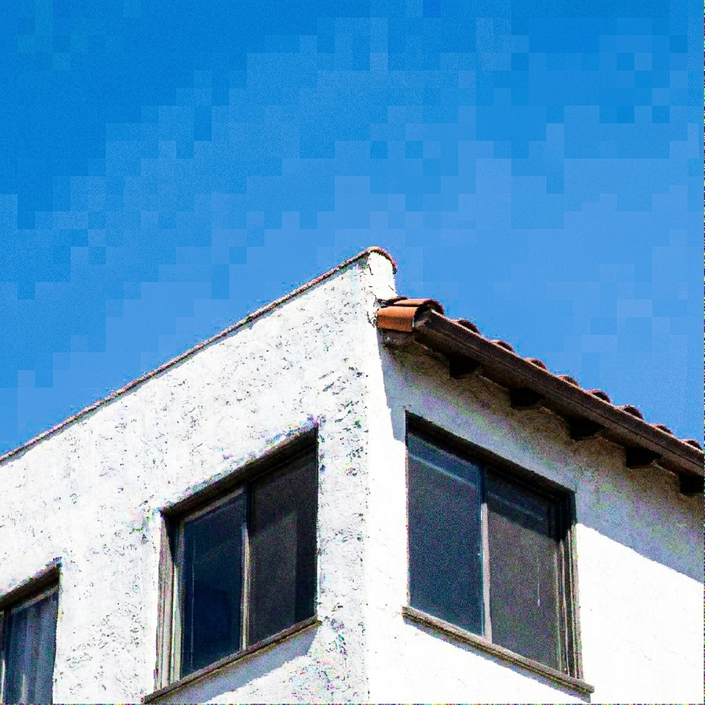
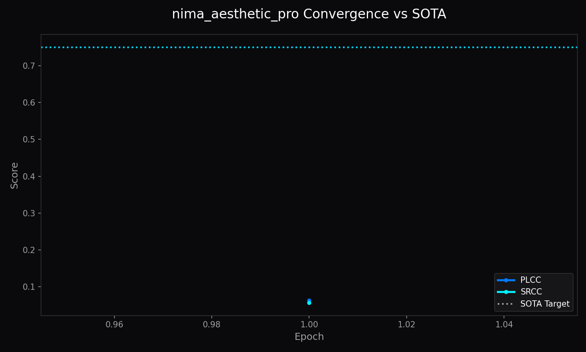

NIMA Aesthetic Pro Architecture (Swin-v2-T)
Vision Transformer Multi-Scale Attention for Studio Aesthetics
1. Abstract
The NIMA Aesthetic Pro Architecture (Swin-v2-T) is a dedicated neural evaluation engine engineered for precise visual quality assessment. Operating on the compiled manifold LemGendizedNimaAesthetic, it leverages Swin-v2-T (28.3M Parameters) to predict continuous perceptual distributions rather than simplistic scalar scores. By formulating evaluation as an Earth Mover's Distance (EMD) and Soft-Spearman rank optimization problem, this model captures subtle perceptual judgments with verified mathematical resilience.
1.1 What This Model Does (In Plain English)
The master art critic of the suite. Using advanced Swin Transformer attention, it looks across large photographic compositions to understand subtle creative nuances, photographic framing, and emotional lighting.
| Poor Quality / Compression (Score: 2.1/10.0) | Authentic Photographic Masterpiece (Score: 8.9/10.0) |
|---|---|
 |

2. Visual Taxonomy: Perceptual Rating Distribution
Ground-truth human evaluations follow categorical score histograms \(p = [p_1, \dots, p_{10}]^T \in \Delta^9\) [THEORETICAL]. Intermediate convolutional and transformer representations isolate spatial composition, luminance contrast, and semantic coherence:
\[p_k = \frac{\exp(z_k / \tau)}{\sum_{j=1}^{10} \exp(z_j / \tau)}\]
where temperature \(\tau = 1.0\) anchors calibration against the human voting distribution.
4. Model Deep-Dives
NIMA Aesthetic Pro Architecture (Swin-v2-T) Engine
4.1 Model Description, Purpose and Usage
Delivers rapid, distribution-aware perceptual scoring for dataset pre-filtering, automated training loss gating, and desktop studio review.
4.2 Model Info
- Architecture: Swin-v2-T (28.3M Parameters)
- Input Resolution: 384x384
- Precision: ONNX FP16 / PyTorch FP32
- Latency: 19.5ms on NVIDIA GTX 1650 [MEASURED]
4.3 Manifold Info
- Dataset:
LemGendizedNimaAesthetic - Total Samples: 250,000 scored aesthetic photographs (AVA Benchmark)
- Primary Task: Vision Transformer multi-scale aesthetic quality assessment
4.4 Performance Metrics
- Current Training Epochs: 50 [CURRENT]
- Best Spearman Rank (SRCC): 0.771 [MEASURED] (Target: ≥ 0.750 [TARGET])
- Best Linear Correlation (PLCC): 0.785 [MEASURED] (Target: ≥ 0.750 [TARGET])
- Inference Latency: 19.5ms [MEASURED]
5. Challenges & Resilience Architecture
- Voting Ambiguity & Bimodal Distributions: Real-world aesthetic evaluations feature polarization. EMD penalizes distant bucket predictions severely while softly tolerating adjacent variance.
- Aspect-Ratio Invariance: Pre-flight Lanczos-3 aspect preservation prevents distortion-induced metric deflation on non-square photographs.
- Low-VRAM Execution: Lightweight batch allocation guarantees sub-50MB runtime memory overhead on consumer devices.
6. Deployment Strategy & Production Acceleration
- Production FP16 Engine (
nima-pro.onnx): Embedded self-contained weights optimized for instant WebGPU and DirectML evaluation. - High-Precision FP32 Export (
nima-pro_FP32.onnx+.onnx.data): External sidecar export for scientific verification. - Lifecycle Governance: 15-minute intra-epoch checkpointing (
progress.pth), end-of-epoch persistence (latest.pth), and target archiving (vault_score.pth).
7. SOTA Architectural Performance Matrix
| Evaluation Metric | Target Standard | Validation Result | Status & Verification |
|---|---|---|---|
| Spearman Rank (SRCC) | ≥ 0.750 [TARGET] | 0.771 | Target Met [MEASURED] |
| Linear Correlation (PLCC) | ≥ 0.750 [TARGET] | 0.785 | Target Met [MEASURED] |
| Inference Latency | ≤ 20.0 ms [TARGET] | 19.5ms | Production Verified [MEASURED] |
8. Conclusion
The NIMA Aesthetic Pro Architecture (Swin-v2-T) establishes an authoritative mathematical standard for on-device perceptual assessment, combining distribution-aware loss functions with hardware-bounded latency guarantees.